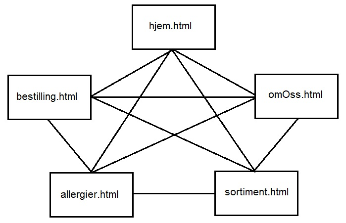
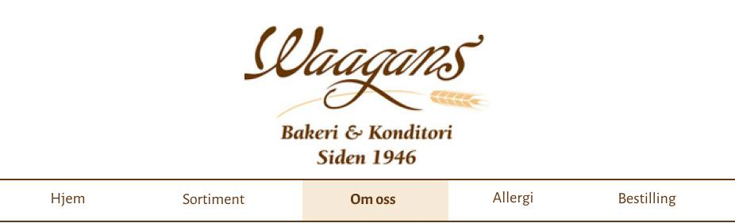
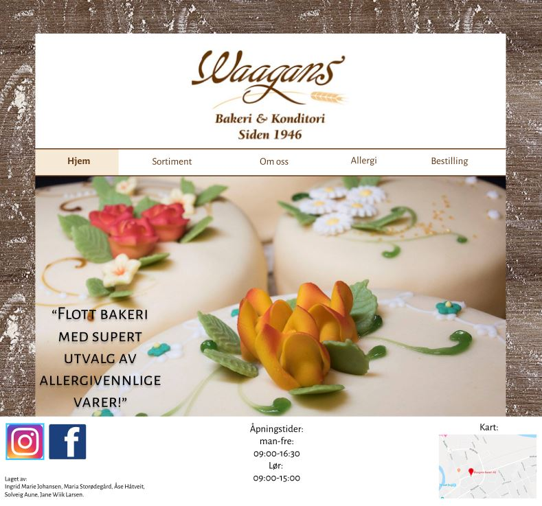
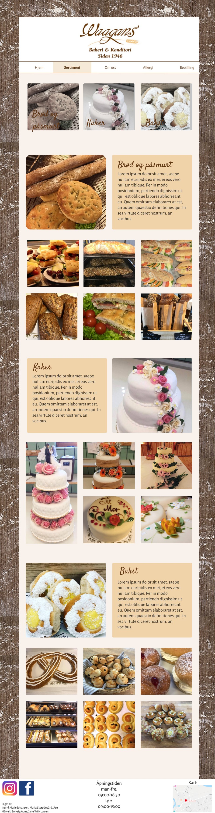

Tittel: Waagans Bakeri
Oss: Ingrid Marie Johansen, Maria Storødegård, Solveig Aune, Jane Wiik Larsen og Åse Håtveit.
Dato: 03.10.2018
Klient: Waagans bakeri. Dette er et lokalt bakeri på Tynset, hvor moren til Jane jobber. De har allerede facebook- og instagramside for bakeriet, i tillegg til en nettside hvor man kan bestille varer fra bakeriet.
Kontakt: Anne Waagan
Dette skal være en nettside for et lokalt bakeri, med informasjon og mulighet for bestilling. Vi skal fokusere på brukervennlighet slik at folk med lite bakgrunn innenfor IT lett også kan finne fram på siden. Dette skal vi gjøre ved å ha konkret informasjon som gjør det lett å finne det de leter etter. Nettsidens design skal ivareta det “gammeldagse” preget bakeriet har i sine lokaler.
Målet med siden er å spre informasjon om bakeriet. Hensikten er ikke å måtte tilbringe mye tid på siden, men å få tak i den informasjonen brukeren leter etter raskt. Dette kan vi gjøre ved å gi brukeren muligheten til å komme seg rundt overalt med kun ett klikk. I tillegg skal hver side være oversiktlig og inneholde en begrenset mengde informasjon. Dette kravet vil blant annet påvirke skriftstørrelse og andre designvalg. Vi vil ta flittig i bruk bilder i diverse deler av websiden som inspirasjon til brukerne.
Vi har valgt å bruke navigasjons strukturen clique, slik at brukeren kan nå alle de forskjellige sidene fra hvilken som helst side, som vist på tegningen under. Dette valget er for å holde fokuset på websiden enkelt og oversiktlig. Vi legger vekt på at alt kan nås på ett klikk med tanke på at målgruppen hovedsakelig består av eldre uten særlig IT-kompetanse, som blir mulig med denne navigasjonsstrukturen. Når brukeren kommer inn på hjemmesiden skal han/hun ha enkel tilgang til en meny som vises uten at du trenger å klikke på noe (denne skal være lik for alle undersidene). Vi har ingen skjulte knapper eller nøstede linker som fører til andre sider enn det som vises i navigasjonsbaren, med unntak av link til facebook og instagram i footeren. Enkelte knapper kan føre deg lenger ned på den daværende siden, men skal ikke linke deg til andre sider.
Bilde 1: navigasjonsstruktur på websiden.
Under er en full plan for hvordan vi har valgt å style css-filen, og begrunnelser for disse valgene.
FontsBakgrunnsbilde: statisk bilde av bord med mel på; bakgrunn.jpg
Banner: "Waagans" sentrert med hvit bakgrunn
Navbar: Posisjonen skal være øverst på siden, rett under logoen. Vi skal lage den slik at den siden du er inne på får en beige firkant rundt og bold tekst. (Altså at knappen blir sånn etter du har trykket på den, slik som på "om oss" -knappen på bildet under.
Bilde 2: header. Logo og navigasjonsbar.
Bilde 3: footer
Hvordan designet hjelper oss å nå målene vi har satt for nettsiden og dens målgruppe:
Med tanke på stil/uttrykk
Designet vi har valgt får fram det tradisjonelle og gammeldagse vi er ute etter. Vi tar opp farger fra logoen til bakeriet, og bruker de i overskrifter og bakgrunner. Dette gir et helhetlig og sammenhengende inntrykk av siden, og står i stil med identiteten til bakeriet selv. Dette håper vi kan bli både estetisk og funksjonelt. Fonten vi har valgt på overskriftene ligner veldig på logoen - her igjen for å gi et helhetlig inntrykk. Bildene vi legger inn kommer til å få ta mye plass, noe som gjør de til blikkfang og lokker leseren til bakeriet.
Med tanke på tilgjengelighet:
Vi har valgt å bruke ganske stor skriftstørrelse på all tekst, noe som gjør det lettere å lese innholdet på nettsiden.Vi bruker farger for å gjøre knapper tydeligere og mer intuitive. Det vil si at brukeren vil få respons i hva de velger å trykke på - de har dermed mer kontroll i sidene de besøker. Blant annet vil den siden man er inne på være markert i menyen, slik at man vet hvilken av sidene man er på. Linkene i menyen skifter farge, slik at det er lett å forstå at dette er en ‘knapp’ man kan trykke på. Bildene er konsentrert på de sidene der det er relevant, f.eks. sortiment, hjem siden og allergier. Bestillingsiden og Om oss siden handler mer om innholdet, og vil inneholde mindre bilder.
Vi skal ha med disse sidene på websiden vår:
Hjem-siden er den første siden brukeren vil bli introdusert til når de kommer til nettsiden. Her tenker vi at brukeren ikke skal trenge å scrolle langt nedover for å finne informasjon, men heller få et overblikk over hva bakeriet tilbyr. Dette ønsker vi å få frem ved å ha et stort slideshow med bilder rett under nav-baren, på samme plassering som du kan se bildet av kakene på illustrasjonen under. Bildene i slideshowet skal være bilder som gjør brukeren interessert i bakeriet, og forhåpentligvis lyst til å besøke det.
For å få frem de spesifikke tingene bakeriet gjør, skal vi ha små tekstbokser med kort informasjon om nyheter eller gode anmeldelser av bakeriet, over relevante bilder. Det eksempelet som står på bildet under er en anmeldelse som står på facebook fra en av bakeriets kunder. Vi tenker også å inkludere nyheter som at de har begynt med påsmurt matpakke, bestilling av bryllupskaker etc.
Funksjonen med hjem-siden er å gi brukeren et visuelt overblikk over hva bakeriet kan tilby, og hvordan andre kunders opplevelser med bakeriet har vært. Denne siden skal gjøre brukeren nysgjerrig til å finne ut mer om bakeriet, og dermed trykke seg inn på de andre sidene i nav-baren.
Bilde 4: Hjem-siden.
Her skal kunden få litt mer info om bedriftens utvikling, historie og hvem som står for baksten. Ettersom det er en familiebedrift er historien til bakeriet sentralt. Dette vil vi få frem i form av bilder av familien og hvis mulig eldre bilder av bakeriet. Det vil ikke være en veldig komplisert side med flere store overskrifter, men heller en litt lenger tekst. Teksten vil ha en godt leselig størrelse, og vil være delt inn i avsnitt slik at den blir lettlest.
Avsnittene på siden vil handle om:
Bilde 5: Om oss-siden.
Denne siden skal ha en kort beskrivelse av de forskjellige produktgruppene bakeriet tilbyr, med mange bilder. Øverst skal det være tre knapper, og når du trykker på dem blir du tatt nedover på siden til seksjonen som tilsvarer det du trykket på. Det er også mulig å scrolle nedover på siden. Hver seksjon har ett større bilde, side om side med en tekstboks som forteller om utvalget, samt seks mindre bilder som illustrerer utvalget. Det blir mulig å klikke på bildene for å gjøre de større, og så kan man bla gjennom bildene som et bildegalleri. Dette gjør siden raskere å laste inn, og er en fin måte å vise fram bildene på. Denne siden har med andre ord mye fokus på bilder.
Bilde 6: Sortiment-siden.
Bilde 7: Allergi-siden
Vi planlegger å fordele arbeidet med JavaScript på denne måten:
Maria har ansvaret for slideshowet på hjem-siden. Slideshowet skal bestå av bilder med sitater fra kommentarfelt på Waagans Facebookside lagt over. Dette er hovedfunksjonen på hjem-siden, og skal være et pent og morsomt førsteinntrykk. Vi tenker 3-5 bilder. Bildene vises i noen sekunder, og glir så videre og gir plass til det neste bildet.
Åse og Solveig kommer til å samarbeide med å lage en god, funksjonell meny øverst på siden. Rent visuelt vil vi prøve å gi ulike utseender på når de forskjellige sidene ikke besøkes, når de besøkes, og om du holder musa over linkene. I tillegg vil du kunne se forskjell på når du trykker på linken - fargen på skriften vil bli lysere i det lille øyeblikket du trykker. Når vi legger inn en slik funksjon vil brukeren av nettsiden enkelt ha kontroll på hvor en befinner seg til enhver tid. Det er også veldig tydelig for en bruker å fysisk se at en trykker på linken før en kommer inn på siden.
Ingrid har ansvaret for å lage bildegalleriet på Sortimentsiden. Denne fungerer slik at bildene lastes inn på siden i et lite format, og kan gjøre større ved å klikke på de. Når man klikker på bildet, blir man tatt inn i et bildegalleri hvor man kan bla seg gjennom bildene ved å trykke på ‘forrige’- og ‘neste’ knapper som kommer opp.
Jane har ansvaret for å lage pop-up sider som kommer opp når man trykker på de forskjellige valgene på bestillingssiden. (Jane legger til klarere beskrivelse)
Alle filer vil bli satt inn i en mappe kalt “Waagans” med denne strukturen:
Waagans
| Navn | Beskrivelse | Dato |
|---|---|---|
| Gruppa | Levere P2 | 09.10.18 |
| Gruppa | Skrive et utkast til CSS | 10.10.18 |
| Maria | Gjøre ferdig hjem.html | 14.10.18 |
| Åse | Gjøre ferdig om_oss.html | 14.10.18 |
| Ingrid | Gjøre ferdig sortiment.html | 14.10.18 |
| Solveig | Gjøre ferdig allergi.html | 14.10.18 |
| Jane | Gjøre ferdig bestilling.html | 14.10.18 |
| Gruppa | Forbedre funksjonelle krav | 17.10.18 |
| Maria | Gjøre ferdig slide_show.js til hjem-siden | 01.10.18 |
| Solveig og Åse | Gjøre ferdig menybar.js (nav-baren) | 01.10.18 |
| Ingrid (og Maria) | Gjøre ferdig bildegalleri.js til sortiment-siden/td> | 01.10.18 |
| Jane | Gjøre ferdig pop_up_bestilling.js til bestillings-siden | 01.10.18 |
| Gruppa | Gjøre ferdig CSS-filen | 03.10.18 |
| Gruppa | All koding ferdig | 03.11.18 |
| Gruppa | Feilsøking/dobbeltsjekking av all kode | 04.11.18 |
| Gruppa | Ferdig med testing (minst 3 personer hver) | 08.11.18 |
| Gruppa | Levere P4 | 10.11.18 |